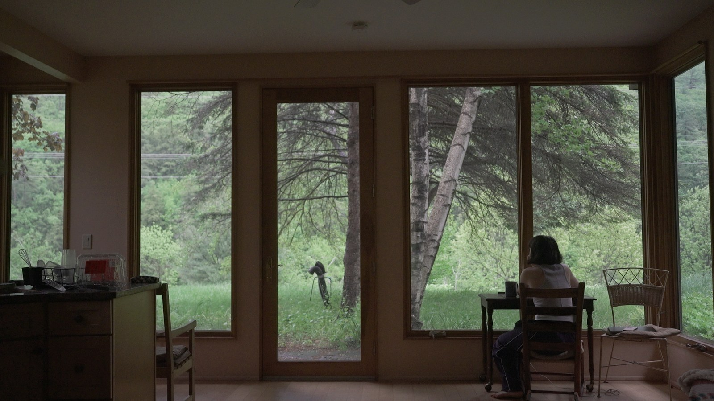

Big Picture
I am a trained facilitator and a meditator who has just emerged from a year of intensive practice in Vipassana and trauma integration.
Facilitation
I was trained in facilitation by Duke’s Center for Counseling & Psychological Services.
I received additional subject-specific facilitation training from Duke’s Center for Multicultural Affairs,
Center for Race Relations, Center for Sexual and Gender Diversity, Women’s Center, and Wellness Center.
I spent 3 years working as a facilitator and 1 year as the director of Common Ground.
Common Ground is a 5-day retreat each that engaged 60–100 students in conversations exploring social identity, power and privilege, and coalition building.
As director, I trained a 20-facilitator team and created a 50-page curriculum.
Formal Meditation Practice
Since 2021, I’ve spent hundreds of hours on the cushion guided by Vipassana teachings.
Including Joseph Goldstein, Sam Harris (Dzogchen), Tara Brach, Adyashanti (Zen), Rob Burbea (emptiness, Samatha practices), and countless more. Intensive — Wat Sopharam— Chiang Mai, Thailand
Winter 2023
1-month Silent Retreat — Spirit Rock — Marin County, CA
Winter 2025
I practiced closely under Kristina Baré and Tara Mulay. 1-month Silent Retreat — Spirit Rock — Marin County, CA
Winter 2025
Contemplative Residency — Huber Sanctuary — Brattleboro, VT
Spring 2025
This included going on a 1-month silent self-retreat. Here, I engaged more intentionally with emptiness and Samatha practices.Contemplative Residency — Huber Sanctuary — Brattleboro, VT
Spring 2025
Guest Student — Insight Meditation Society — Barre, MASummer 2025
I got to attend multiple retreats, including a 10-day Mahasi retreat with Kamala Masters.
Guest Student — Insight Meditation Society — Barre, MA
Summer 2025
Education